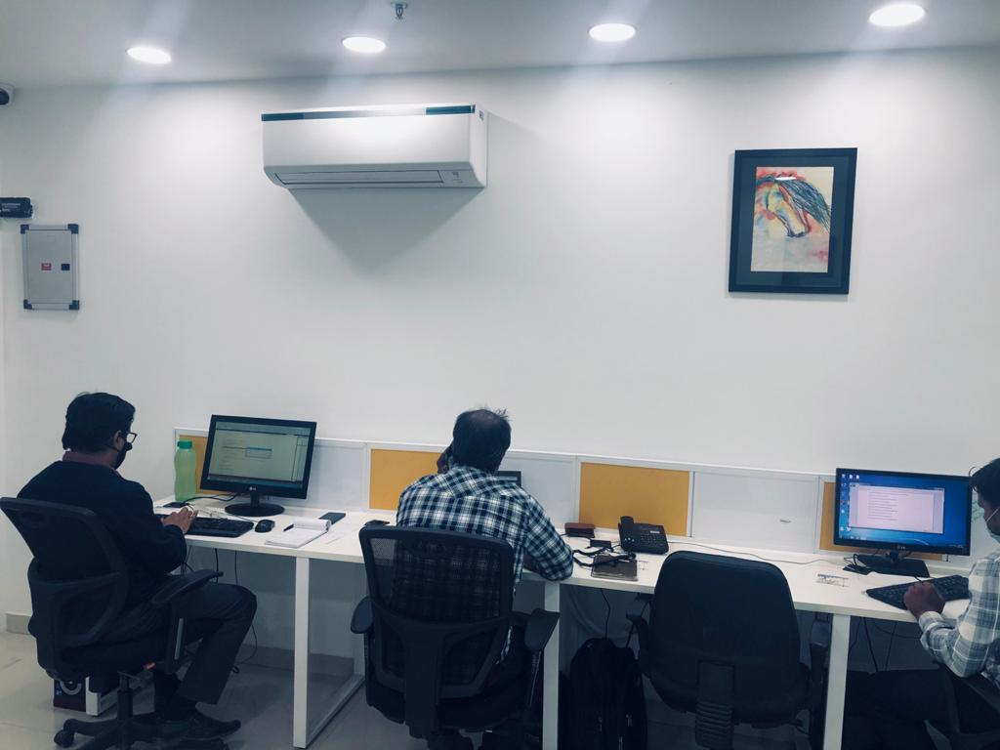
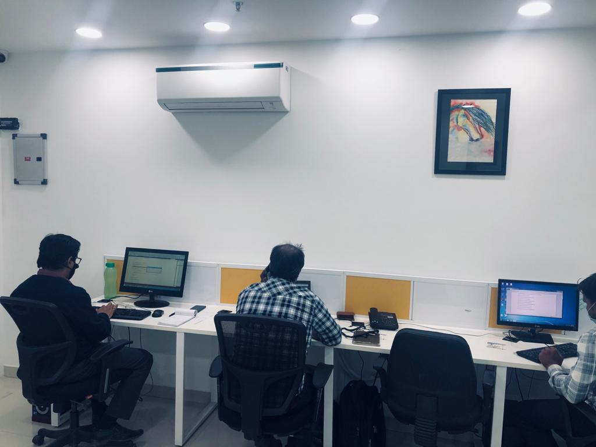

Its create on time view of the company's bank accounts, receivable, payables, orders, inventory , purchases, sales, productions, maintenance, Job work, Excise, Sale T ax, TDS, Service Tax, Trial, Trading Account, Profit and Loss and Balance sheet. Now we can make Sound Business decisions in a timely manner .CMC has been designed and developed to create the next generation ERP with electronically control. Software for progressive businesses. Building on the past principles of ERP and paying close attention to the Demands of today's business environment, we have created an innovative ERP for business management, system suitable for all industries. Using the latest technology and integration facilities, advanced business management tool that will benefit you and your business.
Unique needs of industry-specific business requirements. CMC is a flexible, feature rich, robust and expandable solution suited to most industries and business types. As CMC is suited to a wide range of industries, the following are some examples of industries already benefiting from using CMC.